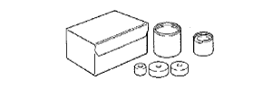
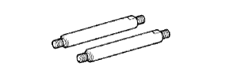
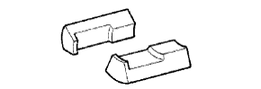
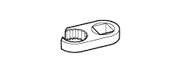

Rear Axle Beam Preparatory Equipment [Installation]
|  | 09710-14013 | Rear suspension Bushetur set |
| (09710-00021) | pipe | |
 | 09950-40011 | Plastic-set |
 | (09951-04010) | Hanger 150 |
 | (09952-04010) | Slide arm |
 | (09953-04030) | Center bolt 200 |
|  | (09954-04020) | Arm 100 |
|  | (09955-04031) | Crow No.3 |
 | (09957-04010) | attachment |
 | (09958-04011) | Holder- |
 | 09950-60010 | Replayer set |
| (09951-00560) | Replacer 56 |
|  | 09023-00100 | Union nut wrench |
| Torque wrench |
| Toyota genuine brake fluid 2500H |